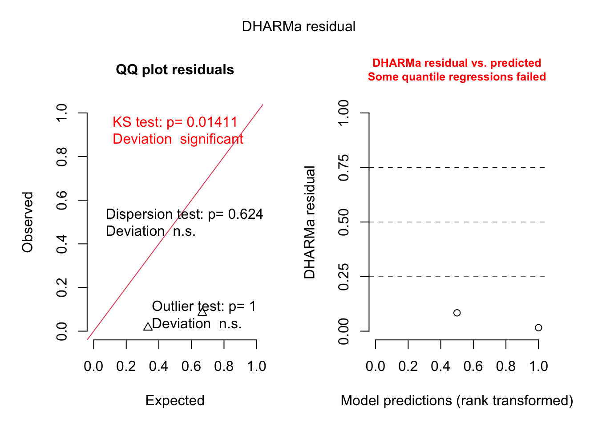
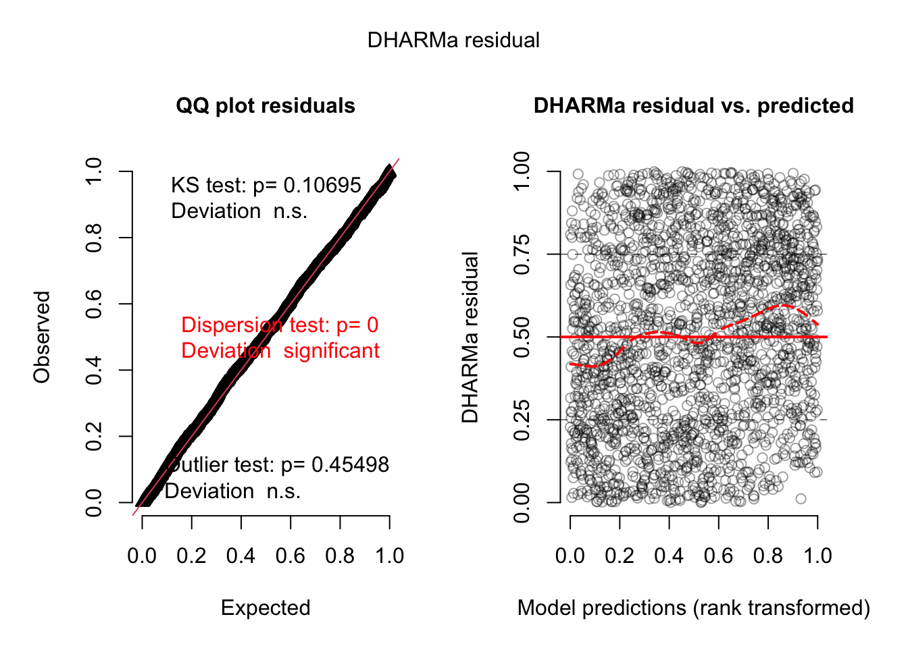
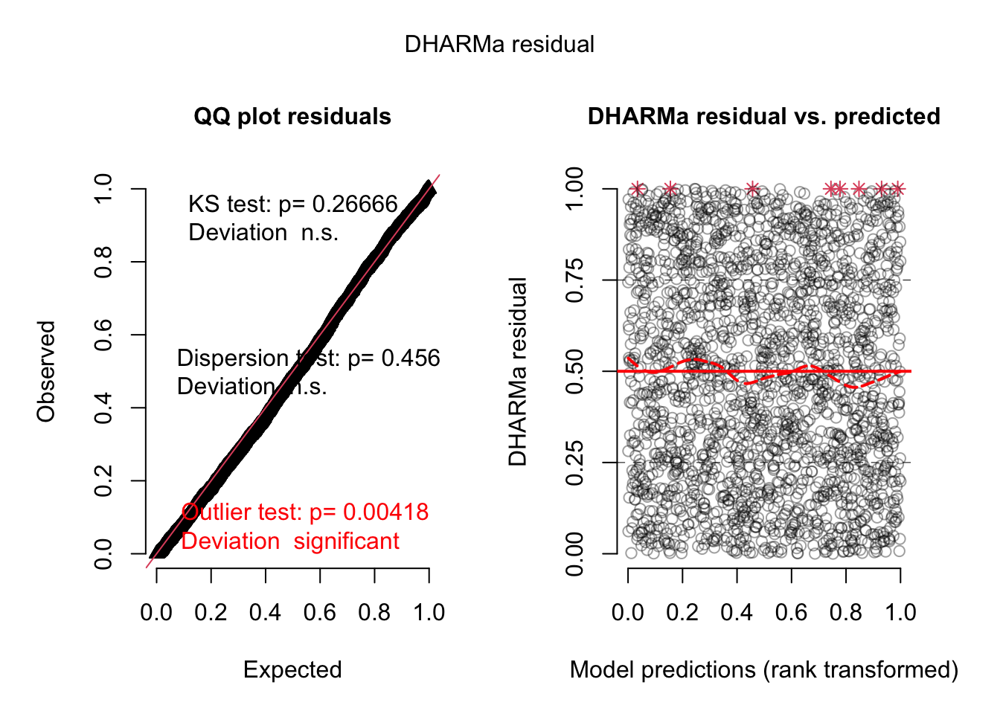
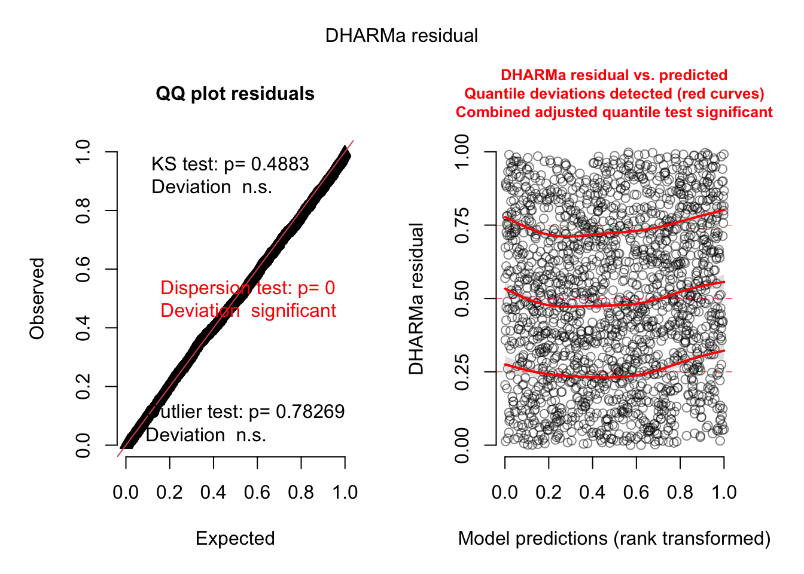

Specifically, they analyze the number of hurricane fatalities, and claim that there is an effect of the femininity of the name on the number of fatalities, correcting for several possible confounders. They interpret the result as causal (including mediators), claiming that giving only male names to hurricanes would considerably reduce death toll.
The original model from the paper fits a negative binomial, using mgcv.{R}. I suppose the reason is mainly that glmmTMB was not available at the time, and implementations of the negative binomial, in particular mass::glm.nb and lme4::glmer.nb often had convergence problems.
Confirm that you get the same results as in the paper. It makes sense to translate their model to glmmTMB. Note that the nb parameterization of mgcv corresponds to nbinom2 in glmmTMB. You will get different results when choosing nbinom1
Inspect the fitted model for potential problems, in particular perform a residual analysis of the model, including residuals against all predictors, and improve the model if you find problems.
Forget what they did. Go back to start, do a causal analysis like we did, and do your own model, diagnosing all residual problems that we discussed. Do you think there is an effect of femininity?
Solution
This is the model fit by Jung et al., fit with glmmTMB
library(DHARMa)library(glmmTMB)
Warning in checkMatrixPackageVersion(): Package version inconsistency detected.
TMB was built with Matrix version 1.4.1
Current Matrix version is 1.5.4.1
Please re-install 'TMB' from source using install.packages('TMB', type = 'source') or ask CRAN for a binary version of 'TMB' matching CRAN's 'Matrix' package
Warning in checkDepPackageVersion(dep_pkg = "TMB"): Package version inconsistency detected.
glmmTMB was built with TMB version 1.9.3
Current TMB version is 1.9.1
Please re-install glmmTMB from source or restore original 'TMB' package (see '?reinstalling' for more information)
Note that in the code that I gave you not all predictors were scaled (and they don’t say if they scaled in the paper), but as we for looking for main effects in the presence of interactions, we should definitely scale to improve the interpretability
now main effect is n.s.; it’s a bit dodgy, but if you read in the main paper, they do not claim a significant main effect, they mainly argue via ANOVA and significance at high values of NDAM, so let’s run an ANOVA:
In the ANOVA we see that MasFem still n.s. but interactions, and if you would calculate effect of MasFem at high NDAM, it is significant. Something like that is argued in the paper. We can emulate this by changing NDAM centering to high NDAM, which gives us a p-value for the main effect of MasFem at high values of NDAM
Now we see the significant main effect that they report. Note, hwoever, that the signficant differences is only there for high NDAM, i.e. what we do here is to project the effect of the interaction on the main effect. An alternative to do the same thing would be an effects plot, or to specifically use predict() to calculate differences and CIs at high NDAM values.
library(effects)
Loading required package: carData
lattice theme set by effectsTheme()
See ?effectsTheme for details.
plot(allEffects(m3, partial.residuals = T))
Warning in Effect.glmmTMB(predictors, mod, vcov. = vcov., ...): overriding
variance function for effects: computed variances may be incorrect
Warning in Analyze.model(focal.predictors, mod, xlevels, default.levels, :
the predictors scale(MasFem), scale(Minpressure_Updated_2014) are one-column
matrices that were converted to vectors
Warning in Effect.glmmTMB(predictors, mod, vcov. = vcov., ...): overriding
variance function for effects: computed variances may be incorrect
Warning in Analyze.model(focal.predictors, mod, xlevels, default.levels, :
the predictors scale(MasFem), scale(Minpressure_Updated_2014) are one-column
matrices that were converted to vectors
OK, this means we can replicate the results of the paper, even if concentrating the entire analysis exclusive on high NDAM seems a bit cherry-picking. Another way to phrase the result is that we don’t find a main effect of MasFem. However, to be fair: the current results to say that there is a significant difference at high NDAM, and such a difference, if it existed, would be importat.
But we haven’t done residual checks yet. Let’s do that:
res <-simulateResiduals(originalModelGAM)
Registered S3 method overwritten by 'GGally':
method from
+.gg ggplot2
Registered S3 method overwritten by 'mgcViz':
method from
+.gg GGally
No significant deviation in the general DHARMa plot, but residuals ~ NDAM looks funny, which was also pointed out by Bob O’Hara in a blog post after publication of the paper. Let’s try to correct this - scaling with ^0.2 does a great job:
All gone, only damage is doing the effect. This wouldn’t change with re-scaling probably, as interactions are n.s.
What if we would have fit our own model? First of all, note that if hurricane names were given randomly, we wouldn’t have to worry about confounders. However, this is not the case, hurricanes were only named randomly after 1978 or so.
plot(MasFem ~ Year, data = hurricanes)
So, we could either take the earlier data out, which would remove half of our data, or we have to worry about confounding with variables that change over time. The most obvious thing would be to take time itself (Year) in the model, to correct for temporal confounding.
Do we need other variables that are not confounders? There is two reasons to add them:
they have strong effects on the response - not adding them could lead to residual problems and increase residual variance, which increases uncertainties and cost power
we want to fit interacts.
I added NDAM to the model, because we saw earlier that it has a strong effect. I think it’s not unreasonable to check for an interaction as well.
As we have several observations per year, a conservative approach would be to add a RE on year. Note that we use year both as a fixed effect (to remove temporal trends) and a random intercept, which is perfectly fine, however.
newModel =glmmTMB(alldeaths ~scale(MasFem) *scale(NDAM^0.2) + Year + (1|Year),data = hurricanes, family = nbinom2)
Warning: '.T2Cmat' is deprecated.
Use '.T2CR' instead.
See help("Deprecated") and help("Matrix-deprecated").
summary(newModel)
Family: nbinom2 ( log )
Formula:
alldeaths ~ scale(MasFem) * scale(NDAM^0.2) + Year + (1 | Year)
Data: hurricanes
AIC BIC logLik deviance df.resid
630.8 648.4 -308.4 616.8 85
Random effects:
Conditional model:
Groups Name Variance Std.Dev.
Year (Intercept) 2.571e-07 0.0005071
Number of obs: 92, groups: Year, 49
Dispersion parameter for nbinom2 family (): 1.11
Conditional model:
Estimate Std. Error z value Pr(>|z|)
(Intercept) -2.542287 12.730846 -0.200 0.842
scale(MasFem) 0.073207 0.119273 0.614 0.539
scale(NDAM^0.2) 1.309624 0.118106 11.089 <2e-16 ***
Year 0.002426 0.006423 0.378 0.706
scale(MasFem):scale(NDAM^0.2) 0.179874 0.117191 1.535 0.125
---
Signif. codes: 0 '***' 0.001 '**' 0.01 '*' 0.05 '.' 0.1 ' ' 1
The results remain that there is no effect of MasFem!
C.2 Researchers Degrees of Freedom — Skin Color and Red Cards
In 2018 Silberzahn et al. published a “meta analysis” in Advances in Methods and Practices in Psychological Science, where they had provided 29 teams with the same data set to answer one research question: “[W]hether soccer players with dark skin tone are more likely than those with light skin tone to receive red cards from referees”.
Spoiler: They found that the “[a]nalytic approaches varied widely across the teams, and the estimated effect sizes ranged from 0.89 to 2.93 (Mdn = 1.31) in odds-ratio units”, highlighting that different approaches in data analysis can yield significant variation in the results.
Task: Do a re-analysis of the data as if you were the 30th team to contribute the results to the meta analysis. You can find the data in the ecodata package, dataset redCards.
Response variable: ‘redCards’ (+‘yellowReds’?).
primary predictors: ‘rater1’, ‘rater2’
Multiple variables, potentially accounting for confounding, offsetting, grouping, … are included in the data.
The rater variable contains ratings of “two independent raters blind to the research question who, based on their profile photo, categorized players on a 5-point scale ranging from (1) very light skin to (5) very dark skin. Make sure that ‘rater1’ and ‘rater2’ are rescaled to the range 0 … 1 as described in the paper (”This variable was rescaled to be bounded by 0 (very light skin) and 1 (very dark skin) prior to the final analysis, to ensure consistency of effect sizes across the teams of analysts. The raw ratings were rescaled to 0, .25, .50, .75, and 1 to create this new scale.”)
When you’re done, have a look at the other modelling teams. Do you understand the models they fit? Note that the results are displayed in terms of odd ratios. Are your results within the range of estimates from the 29 teams in Silberzahn et al. (2018)?
Solution
C.3 Scouting Ants
Look at the dataset EcoData::scoutingAnts, and find out if there are really scouting Ants in Lasius Niger.
Together with the orientation of the Maze, this makes 3 possible directional confounders, and the main predictor (if the Ant went to the pheromone in the first visit).
Adding an RE on colony is logical, and then let’s run the model:
library(lme4)
Loading required package: Matrix
Attaching package: 'lme4'
The following object is masked from 'package:nlme':
lmList
Generalized linear mixed model fit by maximum likelihood (Laplace
Approximation) [glmerMod]
Family: binomial ( logit )
Formula: went.phero ~ ant_group_main + directionConst + directionPhero +
Orientation + (1 | Colony)
Data: dat
AIC BIC logLik deviance df.resid
2192.5 2225.7 -1090.2 2180.5 1869
Scaled residuals:
Min 1Q Median 3Q Max
-4.6870 -1.0451 0.4836 0.6876 1.0318
Random effects:
Groups Name Variance Std.Dev.
Colony (Intercept) 0.9284 0.9636
Number of obs: 1875, groups: Colony, 15
Fixed effects:
Estimate Std. Error z value Pr(>|z|)
(Intercept) 1.9505 0.3330 5.857 4.71e-09 ***
ant_group_mainSecondvisit_1st_to_phero 0.1311 0.1248 1.050 0.29351
directionConstTRUE -1.1465 0.2409 -4.760 1.94e-06 ***
directionPheroright -0.5680 0.1984 -2.863 0.00420 **
Orientationright -0.3493 0.1222 -2.859 0.00425 **
---
Signif. codes: 0 '***' 0.001 '**' 0.01 '*' 0.05 '.' 0.1 ' ' 1
Correlation of Fixed Effects:
(Intr) a__S_1 dCTRUE drctnP
ant_g_S_1__ -0.252
drctnCnTRUE -0.413 -0.062
drctnPhrrgh -0.441 -0.001 0.306
Orinttnrght -0.182 -0.093 -0.074 0.085
Surprisingly, we find large effects of the other variables. Because of these large effects, testing for interactions with the experimental treatment as well
Here we find now that ther is an interaction with the main predictor, and there could be effects. We can also look at this visually.
plot(allEffects(fit2))
The results are difficult to interpret. I would think that there was some bias in the experiment, which led to an effect of the Maze direction, which then create a spill-over to the other (and in particular the main) predictors.
For our education, we can also look at the residual plots. I will use m1, because there was a misfit:
res <-simulateResiduals(m1, plot = T)
As we would significant interactions, we would probably see something if we plot residuals against predictors or their interactions, but I want to show you something else:
We will not see dispersion problems in a 0/1 binomial, but actually, this is a k/n binomial, just that the data are not prepared as such.
Either way, in DHARMa, you can aggregate residuals by a grouping variable.
res2 <-recalculateResiduals(res, group = dat$Colony)
Now, we essentially check k/n data, and we see that there is overdispersion, which is caused by the misfit.
plot(res2)
Warning in smooth.construct.tp.smooth.spec(object, dk$data, dk$knots): basis dimension, k, increased to minimum possible
Unable to calculate quantile regression for quantile 0.25. Possibly to few (unique) data points / predictions. Will be ommited in plots and significance calculations.
Warning in smooth.construct.tp.smooth.spec(object, dk$data, dk$knots): basis dimension, k, increased to minimum possible
Unable to calculate quantile regression for quantile 0.5. Possibly to few (unique) data points / predictions. Will be ommited in plots and significance calculations.
Warning in smooth.construct.tp.smooth.spec(object, dk$data, dk$knots): basis dimension, k, increased to minimum possible
Unable to calculate quantile regression for quantile 0.75. Possibly to few (unique) data points / predictions. Will be ommited in plots and significance calculations.
testDispersion(res2)
DHARMa nonparametric dispersion test via sd of residuals fitted vs.
simulated
data: simulationOutput
dispersion = 0.47405, p-value = 0.624
alternative hypothesis: two.sided
Let’s do the same for model 2, which included the interactions.
res <-simulateResiduals(m2, plot = T)
res2 <-recalculateResiduals(res, group = dat$Colony)plot(res2)
Warning in smooth.construct.tp.smooth.spec(object, dk$data, dk$knots): basis dimension, k, increased to minimum possible
Unable to calculate quantile regression for quantile 0.25. Possibly to few (unique) data points / predictions. Will be ommited in plots and significance calculations.
Warning in smooth.construct.tp.smooth.spec(object, dk$data, dk$knots): basis dimension, k, increased to minimum possible
Unable to calculate quantile regression for quantile 0.5. Possibly to few (unique) data points / predictions. Will be ommited in plots and significance calculations.
Warning in smooth.construct.tp.smooth.spec(object, dk$data, dk$knots): basis dimension, k, increased to minimum possible
Unable to calculate quantile regression for quantile 0.75. Possibly to few (unique) data points / predictions. Will be ommited in plots and significance calculations.

testDispersion(res2)
DHARMa nonparametric dispersion test via sd of residuals fitted vs.
simulated
data: simulationOutput
dispersion = 0.47405, p-value = 0.624
alternative hypothesis: two.sided
Which largely removes the problem!
C.4 Owls
Look at the Owl data set in the glmmTMB package. The initial hypothesis is
The offset is a special command that can be used in all regression models. It means that we include an effect with effect size 1.
The offset has a special importance in models with a log link function, because with these models, we have y = exp(x …), so if you do y = exp(x + log(BroodSize) ) and use exp rules, this is y = exp(x) * exp(log(BroodSize)) = y = exp(x) * BroodSize, so this makes the response proportional to BroodSize. This trick is often used in log link GLMs to make the response proportional to Area, Sampling effort, etc.
Task: try to improve the model with everything we have discussed so far.
DHARMa nonparametric dispersion test via sd of residuals fitted vs.
simulated
data: simulationOutput
dispersion = 0.78311, p-value = 0.104
alternative hypothesis: two.sided
testZeroInflation(m1)
DHARMa zero-inflation test via comparison to expected zeros with
simulation under H0 = fitted model
data: simulationOutput
ratioObsSim = 1.0465, p-value = 0.608
alternative hypothesis: two.sided
Solution using brms
This is not adding dispersion and zero-inflation yet, just to show how such a model could be fit with brms
library(brms)m2 = brms::brm(SiblingNegotiation ~ FoodTreatment * SexParent+ (1|Nest) +offset(log(BroodSize)), data = Owls , family = negbinomial)
Look at the Snails data set in the EcoData package, and find out which environmental and/or seasonal predictors i) explain the total abundance and ii) the infection rate of the three species.
The snails data set in the EcoData package includes observations on the distribution of freshwater snails and their infection rates ( schistosomiasis (a parasit)).
The first scientific question is that their adbundance depends on the water conditions. The second scientific question is that their infection rate depends on the water conditions and seasonsal factors
The data also contains data on other environmental (and seasonal factors). You should consider if it is useful to add them to the analysis.
Species: BP_tot, BF_tot, BT_tot
Number of infected individuals: BP_pos_tot, BF_pos_tot, BT_pos_tot
Total abundances of BP species: Bulinus_tot
Total number of infected in BP species: Bulinus_pos_tot
Tasks:
Model the summed total abundance of the three species (Bulinus_tot)
Model the infection rate of all three species (Bulinuts_pos_tot) (k/n binomial)
Optional: Model the species individually (BP_tot, BF_tot, BT_tot)
Optional: Fit a multivariate (joint) species distribution model
Our hypothesis is that the abundance of Bulinus species depends on the water characteristics, e.g. site_type, Temp_water, pH, Cond, swmo_prec, water_speed_ms, and water_depth. We will set the length of the collection duration as an offset.
Call:
glm(formula = Bulinus_tot ~ offset(log(duration)) + site_type +
sTemp_Water + spH + sCond + swmo_prec + swater_speed_ms +
swater_depth, family = poisson, data = data)
Deviance Residuals:
Min 1Q Median 3Q Max
-11.181 -5.895 -3.382 0.729 46.751
Coefficients:
Estimate Std. Error z value Pr(>|z|)
(Intercept) 0.328925 0.006417 51.258 < 2e-16 ***
site_typecanal.3 -0.161047 0.010287 -15.656 < 2e-16 ***
site_typepond -0.837273 0.022624 -37.009 < 2e-16 ***
site_typerice.p -1.378799 0.027252 -50.595 < 2e-16 ***
site_typeriver -1.730850 0.032842 -52.703 < 2e-16 ***
site_typerivulet -1.757255 0.041545 -42.298 < 2e-16 ***
site_typespillway -1.679141 0.048544 -34.590 < 2e-16 ***
sTemp_Water -0.089050 0.004435 -20.080 < 2e-16 ***
spH 0.036653 0.004501 8.144 3.82e-16 ***
sCond 0.072787 0.004979 14.620 < 2e-16 ***
swmo_prec -0.098717 0.006337 -15.577 < 2e-16 ***
swater_speed_ms -0.181606 0.007695 -23.600 < 2e-16 ***
swater_depth -0.113600 0.005998 -18.940 < 2e-16 ***
---
Signif. codes: 0 '***' 0.001 '**' 0.01 '*' 0.05 '.' 0.1 ' ' 1
(Dispersion parameter for poisson family taken to be 1)
Null deviance: 131410 on 2071 degrees of freedom
Residual deviance: 116126 on 2059 degrees of freedom
AIC: 122311
Number of Fisher Scoring iterations: 6
As the sites are nested within localities, we will set a nested random intercept on site_irn within locality. Also potential confounders are collection date (coll_date), the season (wet or dry months, seas_wmo), year, and maybe other environmental factors such as the air temperature?.
Correlation matrix not shown by default, as p = 15 > 12.
Use print(x, correlation=TRUE) or
vcov(x) if you need it
Check residuals:
res =simulateResiduals(model2, plot =TRUE, re.form =NULL)
DHARMa:testOutliers with type = binomial may have inflated Type I error rates for integer-valued distributions. To get a more exact result, it is recommended to re-run testOutliers with type = 'bootstrap'. See ?testOutliers for details
Does not look great -> dispersion problems -> switch to -> negative binomial distribution:
DHARMa nonparametric dispersion test via sd of residuals fitted vs.
simulated
data: simulationOutput
dispersion = 0.065593, p-value = 0.08
alternative hypothesis: two.sided
testZeroInflation(res)
DHARMa zero-inflation test via comparison to expected zeros with
simulation under H0 = fitted model
data: simulationOutput
ratioObsSim = 1.052, p-value = 0.656
alternative hypothesis: two.sided
We detrended space there could be spatial autocorrelation, let’s check for it:
## Spatialres2 =recalculateResiduals(res, group =c(data$site_irn))groupLocations =aggregate(cbind(data$sLat, data$sLon ), list( data$site_irn), mean)testSpatialAutocorrelation(res2, x = groupLocations$V1, y = groupLocations$V2)
DHARMa Moran's I test for distance-based autocorrelation
data: res2
observed = 0.295785, expected = -0.011364, sd = 0.066951, p-value =
4.482e-06
alternative hypothesis: Distance-based autocorrelation
Significant! Let’s add a spatial correlation structure:
Warning: '.T2Cmat' is deprecated.
Use '.T2CR' instead.
See help("Deprecated") and help("Matrix-deprecated").
res =simulateResiduals(model5, plot =TRUE)
DHARMa:testOutliers with type = binomial may have inflated Type I error rates for integer-valued distributions. To get a more exact result, it is recommended to re-run testOutliers with type = 'bootstrap'. See ?testOutliers for details
glmmTMB does not support conditional simulations but we can create conditional simulations on our own:
pred =predict(model5, re.form =NULL, type ="response")pred_dispersion =predict(model5, re.form =NULL, type ="disp")simulations =sapply(1:1000, function(i) rnbinom(length(pred),size = pred_dispersion, mu = pred))res =createDHARMa(simulations, model.frame(model5)[,1], pred)plot(res)

Residuals do not look perfect but I would say that we can stop here now.
DHARMa:testOutliers with type = binomial may have inflated Type I error rates for integer-valued distributions. To get a more exact result, it is recommended to re-run testOutliers with type = 'bootstrap'. See ?testOutliers for details

We have dispersion problems, but we cannot model the dispersion for binomial models.
Check for spatial autocorrelation:
## Spatialres2 =recalculateResiduals(res, group =c(data$site_irn))groupLocations =aggregate(cbind(data$sLat, data$sLon ), list( data$site_irn), mean)testSpatialAutocorrelation(res2, x = groupLocations$V1, y = groupLocations$V2)
DHARMa Moran's I test for distance-based autocorrelation
data: res2
observed = 0.159982, expected = -0.011364, sd = 0.067031, p-value =
0.01058
alternative hypothesis: Distance-based autocorrelation
Significant! Let’s correct for spatial autocorrelation with a correlation structure:
Warning: '.T2Cmat' is deprecated.
Use '.T2CR' instead.
See help("Deprecated") and help("Matrix-deprecated").
res =simulateResiduals(model2, plot =TRUE)
They look good now!
Solution of multivariate (joint) species distribution model
The species models are connected by their response to latent variable (unobserved environment). For that, we will transform our dataset with respect to species from wide (sp1, sp2, sp3) to long format (species abundances in one column and a second column telling us the group (species)). In the model then, we will separate the species and their responses by using ~0+Species + Species:(predictors).
The latent variable structure is set by the rr(…) object in the formula:
Bonus: Solution for SBDensity (lmm) with phylogenetic correlation structure
Prepare phylogeny:
library(ape)library(geiger)
Attaching package: 'geiger'
The following object is masked from 'package:brms':
bf
species =unique(data$Species)species_df =data.frame(Species = species)rownames(species_df) = speciesobj =name.check(plantPhylo, species_df)# drop rest of the speciesphyl.upd =drop.tip(plantPhylo, obj$tree_not_data)summary(phyl.upd)
Phylogenetic tree: phyl.upd
Number of tips: 152
Number of nodes: 140
Branch lengths:
mean: 22.21203
variance: 624.9334
distribution summary:
Min. 1st Qu. Median 3rd Qu. Max.
0.200000 5.425002 12.800003 30.402499 123.000001
Root edge: 1
First ten tip labels: Tofieldia_pusilla
Tofieldia_calyculata
Veratrum_album
Maianthemum_bifolium
Polygonatum_verticillatum
Juncus_monanthos
Luzula_glabrata
Luzula_sylvatica
Luzula_multiflora
Carex_sempervirens
First ten node labels: N398
N401
Tofieldiaceae
N573
N636
N1019
N1054
N1063
Juncaceae
Luzula
# check the names in the tree and in the data setname.check(phyl.upd, species_df)
Warning in checkConv(attr(opt, "derivs"), opt$par, ctrl = control$checkConv, :
Model failed to converge with max|grad| = 0.0108795 (tol = 0.002, component 1)
summary(model1)
Generalized linear mixed model fit by maximum likelihood (Laplace
Approximation) [glmerMod]
Family: binomial ( logit )
Formula: SBPA ~ sSeedMass + sSeedShape + sSeedN + sAltitude + sHum + (1 |
Site) + (sAltitude | Species)
Data: data
AIC BIC logLik deviance df.resid
1368.9 1423.4 -674.4 1348.9 1719
Scaled residuals:
Min 1Q Median 3Q Max
-2.5936 -0.2658 -0.1017 0.2001 3.3351
Random effects:
Groups Name Variance Std.Dev. Corr
Species (Intercept) 8.16305 2.8571
sAltitude 4.39255 2.0958 -0.13
Site (Intercept) 0.06796 0.2607
Number of obs: 1729, groups: Species, 152; Site, 17
Fixed effects:
Estimate Std. Error z value Pr(>|z|)
(Intercept) -2.6286 0.4066 -6.465 1.01e-10 ***
sSeedMass -1.3671 0.6432 -2.126 0.0335 *
sSeedShape -0.5806 0.3099 -1.873 0.0610 .
sSeedN -2.1362 1.3165 -1.623 0.1047
sAltitude -1.3930 0.3365 -4.140 3.47e-05 ***
sHum -0.1021 0.1308 -0.781 0.4349
---
Signif. codes: 0 '***' 0.001 '**' 0.01 '*' 0.05 '.' 0.1 ' ' 1
Correlation of Fixed Effects:
(Intr) sSdMss sSdShp sSeedN sAlttd
sSeedMass 0.221
sSeedShape 0.033 0.062
sSeedN 0.336 0.061 -0.066
sAltitude 0.132 0.142 0.079 0.012
sHum 0.023 0.002 -0.003 -0.011 0.229
optimizer (Nelder_Mead) convergence code: 0 (OK)
Model failed to converge with max|grad| = 0.0108795 (tol = 0.002, component 1)
Model did not converge, but there is a trick which often helps. The default optimizer in lme4 is not the best optimizer, changing it to ‘bobyqa’ often helps with convergence issues
Generalized linear mixed model fit by maximum likelihood (Laplace
Approximation) [glmerMod]
Family: binomial ( logit )
Formula: SBPA ~ sSeedMass + sSeedShape + sSeedN + sAltitude + sHum + (1 |
Site) + (sAltitude | Species)
Data: data
Control: glmerControl("bobyqa")
AIC BIC logLik deviance df.resid
1368.9 1423.4 -674.4 1348.9 1719
Scaled residuals:
Min 1Q Median 3Q Max
-2.5938 -0.2658 -0.1018 0.2001 3.3353
Random effects:
Groups Name Variance Std.Dev. Corr
Species (Intercept) 8.16321 2.8571
sAltitude 4.38183 2.0933 -0.13
Site (Intercept) 0.06786 0.2605
Number of obs: 1729, groups: Species, 152; Site, 17
Fixed effects:
Estimate Std. Error z value Pr(>|z|)
(Intercept) -2.6284 0.4066 -6.465 1.01e-10 ***
sSeedMass -1.3693 0.6438 -2.127 0.0334 *
sSeedShape -0.5816 0.3100 -1.876 0.0606 .
sSeedN -2.1420 1.3180 -1.625 0.1041
sAltitude -1.3920 0.3362 -4.141 3.46e-05 ***
sHum -0.1022 0.1307 -0.781 0.4345
---
Signif. codes: 0 '***' 0.001 '**' 0.01 '*' 0.05 '.' 0.1 ' ' 1
Correlation of Fixed Effects:
(Intr) sSdMss sSdShp sSeedN sAlttd
sSeedMass 0.222
sSeedShape 0.033 0.062
sSeedN 0.337 0.061 -0.066
sAltitude 0.132 0.142 0.079 0.013
sHum 0.023 0.002 -0.003 -0.011 0.229
Success, it converged!
Residual checks:
Check residuals:
res =simulateResiduals(model1, re.form=NULL, plot=TRUE)
Residuals look good!
Bonus: With phylogenetic correlation structure:
dist_phylo = ape::cophenetic.phylo(phyl.upd2) # create distance matrixcorrelation_matrix =vcv(phyl.upd2)[unique(data$Species), unique(data$Species)]####the following code was taken from https://github.com/glmmTMB/glmmTMB/blob/master/misc/fixcorr.rmdas.theta.vcov <-function(Sigma,corrs.only=FALSE) { logsd <-log(diag(Sigma))/2 cr <-cov2cor(Sigma) cc <-chol(cr) cc <- cc %*%diag(1/diag(cc)) corrs <- cc[upper.tri(cc)]if (corrs.only) return(corrs) ret <-c(logsd,corrs)return(ret)}corrs =as.theta.vcov(correlation_matrix, corrs.only=TRUE)#####data$dummy =factor(rep(0, nrow(data)))nsp =length(unique(data$Species))model6 =glmmTMB(SBPA~ sSeedMass + sSeedShape + sSeedN + sAltitude + sHum + (1|Site) + (sAltitude|Species) + (1+Species|dummy),map=list(theta=factor(c(rep(0, 4), rep(1,nsp),rep(NA,length(corrs))) )),start=list(theta=c(rep(0, 4), rep(0,nsp),corrs)),family = binomial,data = data)
Warning: '.T2Cmat' is deprecated.
Use '.T2CR' instead.
See help("Deprecated") and help("Matrix-deprecated").
simulateResiduals(model6, plot =TRUE)
Object of Class DHARMa with simulated residuals based on 250 simulations with refit = FALSE . See ?DHARMa::simulateResiduals for help.
Scaled residual values: 0.5024676 0.5329717 0.5854716 0.9968902 0.7858493 0.5647619 0.1162222 0.1334808 0.1071773 0.3725763 0.2077203 0.3276229 0.02545432 0.06809947 0.3315729 0.3429219 0.6135937 0.4816801 0.6575116 0.8497154 ...
Conditional simulations:
pred =predict(model6, re.form =NULL, type ="response")simulations =sapply(1:1000, function(i) rbinom(length(pred),1, pred))res =createDHARMa(simulations, model.frame(model6)[,1], pred)plot(res)

C.7 Snouter
Fit one of the responses in the snouter datset against the predictors rain + djungle (see ?snouter). Check for spatial autocorrelation and proceed to fitting a spatial model if needed. See the data set’s help for details on the variables.